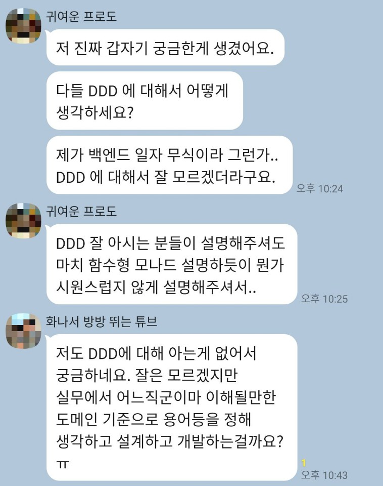
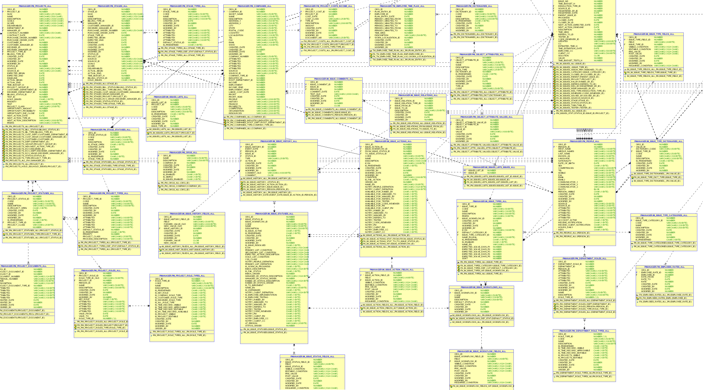
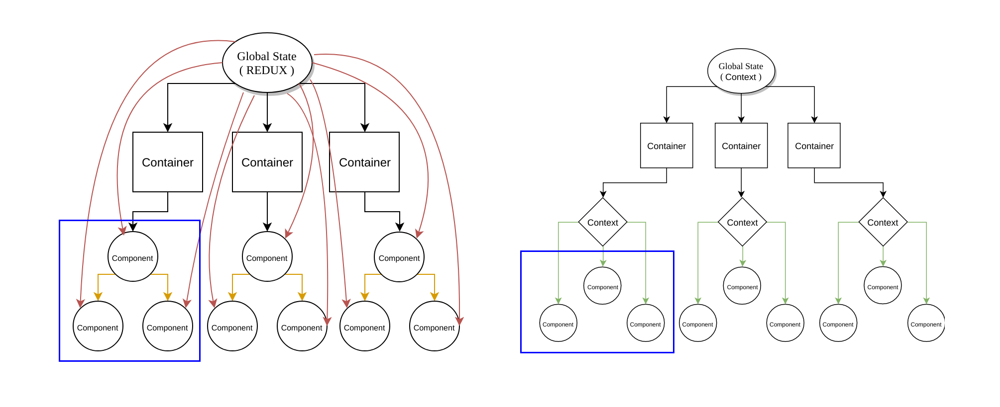

DDD 질문에 대한 생각 정리
질문

질문자에게 전달해야겠다고 생각한 내용
- 일단 (계획없이) join 사용은 피하자.
- RDBMS만 영속(persistence)가 아니다.
- ORM은 객체가 persistence가 되는것이다. 객체지향 설계는 DDD와 맥락을 같이한다.
- DDD가 잘되면 MSA는 자연스러운 것.
질문에 대한 내 생각 정리
전회사에서 개발 좋아하는 성향의 사람들이 모여서 퇴사후에도 종종 수다를 떠는 (내가 애정하는) 카톡방에서 계신 프론트 개발자분께서 DDD란 주제로 질문을 해주셨다.(백엔드도 잘하심) 내 주위에 DDD 잘한다고 말하시는분 찾기 힘들고 나역시도 DDD에 전문가라고 말하고 다닐만큼 역량이 되지 않는지라 이 주제에 대해 글을 쓰는건 두렵지만 이렇게 글을 남기면 내가 잘 못 알았던 부분에 대한 피드백도 받을 수 있을거란 기대감에 지인께서 질문하신 DDD에 대한 내 생각을 풀어보겠다.
1. DDD는 왜 필요할까?
먼저 DDD를 공부할때 나오는 바운디드컨텍스트, 애그리것루트, 전략적 설계, 전술적 설계 등등 용어가 난무하는데 이런 용에에 집착하다보면 본질을 놓칠수 있다고 생각이 들어 내가 생각하는 DDD의 본질은 무엇일까에 대해 생각을 해본다.
먼저 DDD는 설계에 대한 여러 테크닉들이 들어가 있다.
그럼 설계는 왜 하는 것일까? 우리는 이미 알고 있다. 잘못된 설계는 나중에 개발 및 유지보수도 어려워지고 여러 블라블라 이야기를 합니다.
그럼 설계는 무엇을 의미할까요?
좁게는 DB 설계를 의미할 것이고 넓게는 우리가 코딩하기 위해 고민하는 모든 것이 설계가 될 수 있겠죠.
일단 좁게 우리가 흔히 SI에서 설계라고하는 이야기로 한정지어 ‘요구사항 분석 -> 설계’후 산출물인 ERD를 가지고 설계를 한다고 생각해보시죠.
(erd 샘플 - 인터넷에서 복잡해보이는거 가져옴.)

과거 SI 초반 설계 단계에서 상당히 복잡한 ERD를 DBA나 리더급이 작성을하고 이것을 기반으로 코딩을 하곤했습니다. 인간은 완벽할 수 없기에 개발하면서 저 ERD도 추가/수정/삭제가 계속 이루어지게됩니다.
자 여기서부터 불행은 시작된다고 봅니다.
일단 설계단계에서 나오는 ERD는 toooooo complex합니다. 왜냐하면 대부분 이건 이래서~ 필요할거니 넣어야지 하면서 추가된 테이블들이 하나둘 쌓여가며 오버엔지니어링 덩어리였었습니다.
저의 소프트웨어 설계의 기본 골자는 TDD와 맥락을 같이합니다.
실패하는 테스트 -> 성공하는 테스트로 가는 것 처럼 불필요한 코드는 일단 짜지 않고 동작하는 최소의 코드에서 점차 레고블럭을 쌓듯 코드는 늘어나야한다고 생각합니다. 그리고 코딩하는 행위 자체가 설계가 되기에 처음에 설계한것은 유연하게 계속 바뀔 수 있어야하고요…(그에 반해 ERD는 신성시해서 그걸 벗어나서 사고하는 것이 금기시되면서 개발자의 자유도를 떨어트린다고 생각합니다. 물론 ERD가 무조건 비난받을 대상은 아니고요 훌륭한 도구죠. 일부분은 단점이 있다는 시각에서 글을 작성하고 있습니다.)
too complex 다음으로 ERD의 문제점은 RDBMS적으로 설계가 된 것을 OOP로 변환해야한다는 것입니다. 이건 제가 생각하기엔 두가지 문제점을 야기합니다.
- 코드가 전반적으로 OOP가 아닌 절차적으로 짜여진다.
- everything is rdbms.
(2가지로 나눠서 이야기를했지만 한번에 묶어서 전개를하겠습니다. 그냥 위의 생각이 아래 글에 녹아져있습니다. 있…있을거예요.) 패러다임이 전환됨에 따라 패러다임 전환 비용이 발생합니다. 그러기에 우리는 mybatis나 jdbctemplate 같은 sql mapper를 사용해서 전환 비용을 줄이려고 노력을 하죠.
헌데 이러한 관점에서 지속적으로 코딩의 양이 늘어나면 발생하는 건 이전의 too complex와 연결되는 것이긴한데. sql mapper를 통해 db 데이터를 객체에 매핑하던 패러다임에 익숙한 개발자는 데이터의 연관 관계만을 살펴보고 join으로 해결할 수 있으면 join으로 테이블들을 묶고 새로운 Model class(디비에서 가져온 데이터를 맵핑하는 객체)를 만들어서 코딩을하게 되죠.
왜냐?
이렇게 사고하는게 자연스러운 흐름이기 때문이죠.
그렇게에 어느샌가 Model 이름이 붙은 클래스들이 하나둘씩 늘어나기 시작하고 개발자들은 얘는 어디서 쓰기위해 만든건지 짐작하기 어려워지죠…
그래서
(이런 질문글들을 종종 보게 되고 저도 글을 쓸게 되었네요…)
참고로 javascript, python 같은 동적타입들은 자바처럼 sql mapping할 클래스를 만들지 않아도 되서 편하기에 이런 고민을 안할거라고 판단이 됩니다. 허나 역시 rdmbs적인 사고에서 벗어나지 못하고 코딩을 할 수 밖에 없다고 생각합니다. 결국 자바처럼 model을 만들 고통이 줄어들어서 그렇지 문제 해결을 위해 join…join…join…한 걸 가져다 쓰죠. 아마 오히려 자바보다 더 join위주의 문제 해결이 더 심할 것으로 판단합니다.(자바쪽은 귀찮아서 기존에 있는거 갖다 쓰려고는 하는데 동적타입은 그냥 select 쿼리 날리고 그냥 쓰기만하면 되기에…)
아무튼 다시 RDBMS적으로 설계가 된 것을 OOP로 변환이라는 주제로 넘어가서 절차적으로 코딩하다보니 모델링은 죄다 join으로 풀게되고 이러면서 OOP적인 설계 또는 모델링에 실패를하게 된다고 생각합니다. 그리고 연결되는게 rdbms로 못하는게 없다는 생각과 연결되게 되는 것 같은데. (틀린말은 아니지만 이 글은 패러다임에 대한 주제를 다루고 있어서 조금 그 주제에 대한 갑론을박은 넘어가도록하겠습니다…)
그럼 join으로 풀게되면 문제점이 무엇일까요?
질문을 주신 분도 front 개발자시니 서로 공감가는 이미지를 찾아보았습니다.

위의 이미지처럼 component의 상태 설계시 상태를 global state에 다 때려박으면 생기는 문제점은 어느 컴포넌트에 영향을 줄지 모르기 때문에 코드의 유지보수를 위해서는 global state를 최소화하는게 중요합니다.(처음엔 좋다고 redux나 vuex같은 global state를 썼다가 낭패를 보기 쉽죠…)
자 그럼 global state가 front만에서만 있을까요?
저 프론트의 global state가 백엔드에서는 DB입니다.
DB의 테이블의 필드의 이름이 변경된다던가 삭제후 어떤 api가 영향을 받게 되는지 모든것을 캐치할 수 있는 개발자는 별로 없을 것입니다. (그러기에 수많은 테스트를하고 삽질을하고 장애나면 대응을하고…)
자… 이런것에 대안은 DDD입니다.
(서론이이 길었긴한데 애들이 깨서 아침 준비를 해야해서… 그러면서 이야기거리를 좀더 정리를하고 다시 돌아 오겠습니다.)